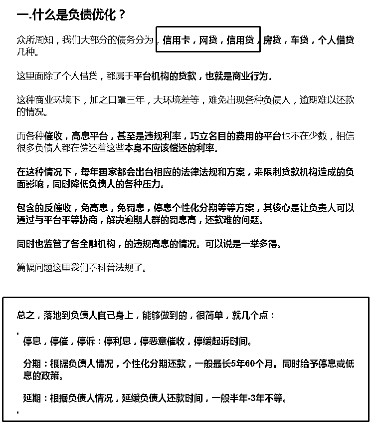

来源：https://kkehvdiodf.feishu.cn/docx/NQOTd2uu4or84YxPdPPcGrLTngf
这篇文章其实两个月前就准备写了，大致是把今年我们的负债优化项目整体获客方案的流程，做成一个大的落地复盘，分享出来。
但是一直没想通怎么写，内容写了很多，但是一直没梳理清楚要表达哪些核心内容，而这些核心内容究竟是否有价值，这些价值是否适合生财的大多数圈友看。
一直不通就一直拖延，我这个人就是这点毛病，哈哈。
这几天突然想通了，既然内容和方法很多，但是每个内容又未必足够优秀，那就干脆把所有内容都做出来，搞一个冷门新行业引流方法论合集：
一来，这篇文章肯定适合各个阶段的圈友看了，起码保底质量有了。
二来，输出就是输入，整套资料未来少不了我们自己要用到，总是要做复盘的。
短期之内类似的项目这些获取流量的方法完全是可套用可复制的，这点自信我还是有的。
项目比较敏感，我们不多讲项目，多讲我们在新红利行业如何快速低成本获客的逻辑。
其中包含了快手直播投流，合伙人模式获客，小红书投流获客，短视频获客，线下小卡片获客，手聊获客。
但是内容太长，我这个人又拖延，全写完不知道什么时间了。
我就想，先把我觉得有价值的写出来，写一篇发一篇，然后把价值平平的那些内容，最后做到一个合集里，就形成一个整体复盘方法论了，并且啥时间写完啥时间算数，顿觉压力骤减，哈哈。
嗯，我想象中，大概是这样。
您的点赞评论就是我最大的动力，如有指教，敬请评论留言。
如果觉得这套复盘对您有帮助的话，欢迎骚扰催更。
文末有勾搭我的方式，我喜欢交朋友，喜欢讨论业务。
以上是写第一篇文章的时间写的前言。
9.20号，磨了好久终于写完了，哈~~~
全文估计有2W多字，还是按照之前的计划，独立的方案我单独写在一篇文章里，然后做一个合集给到大家。
毫不夸张的说，这几套方案，详细的拆解了流程和操作细节，新项目获客甚至直接可以直接拿去抄作业就是了。
有些方法针对我的行业可能已经过了窗口期，同时没有建立起相关壁垒的话方法会变成鸡肋。
不过我是做复盘，是为了新的项目窗口期储备弹药，所以相信还是会对很多朋友有帮助。
这个项目，我们过完年开始正式做，相对入局较晚，现在每个月大概可以做到10几万的流水。
我们主要的流量来自于快手直播，小红书，但是我们未来的布局是合伙人模式，为什么，后面会讲。
这个行业已经默默存在数年了，今年开始相关的内容更频繁的出现，需求也越来越大，慢慢进入了大众的视角。
由于文章侧重点的问题，我会后面会简单解释下行业，大家有个概念就好。
因为监管，这个行业和保险，信用卡，贷款很像，是属于推广被监管的行业。
所以会出现一边需求量很大，但是找不到和了处理方法，而另外一边获客又比较困难的情况。
这样的形式下恰好促进了个人宣传形式的发展，就像以往的保险，信用卡，贷款行业一样。
客户在每个人的身边，人人都可以推广，人人都可以拿佣金。
现在我们在尝试推行一种新模式，合伙人模式。
简单讲就是合伙人只需要负责宣传推广，剩下服务客户的工作由我们公司来做，合伙人坐等佣金就好。
同时，公司还会给合伙人提供多种引流获客的方式。
我这篇复盘文章也是想着，可以先做一个以后给合伙人赋能方案的一个雏形。
细节我会在，从零搭建合伙人平台这篇文章详细讲。
以下摘录自我的一篇软文，我放在这里，有兴趣的单独去看，不影响我们这篇文章分享的内容。
https://mp.weixin.qq.com/s/vJ8nGFgwm8q9um3lhLsVyw
因为是软文，作为了解来看就好，细节的问题可以单独问我。
生财也有单独讲这个行业的，大家可以去找找看。

这是一个小重点，简单讲一下。
我看几个月前星球都有不少圈友在发相关内容，但是现在还有绝大多数圈友不了解和这个行业，在互联网信息的当下，这确实是很奇怪的事情。
之所以这样，就是因为这个行业的属性。
金融行业全网限流，加上我的新团队都是流量小白，所以项目开始我只能从很多边边角角的地方找流量，所以才整理了很多以前看不到，甚至看不上的流量获取方案。
说到全网限流，很多了解这个行业的人可能会有很多对行业细节问题，我记得之前有个圈友发过一篇行业相关的讲解文章，亦仁的第一个问题就是，这个违法吗？
我先用一个较小的篇幅，把这个行业的问题讲下，然后咱们开始讲流量。
严格来讲，不违法，但前提是，业务操作必须按照的委托的模式去做。
既：负债后，负债人可以自己与平台协商，免息分期还款，或停止对负责人催收的行为，来解决当前负债人所面临的问题的问题（高息，被催，被诉等问题），同时也可以委托律所，或者三方公司，代为协商。
但是市场就是这样，一个业务一旦规模化，商业化，难免流程上变形，就会有违规的地方出现，比如说交付方资质问题。
而业内一般采取的策略是，把整个行业分为前段端（流量） 转化（中端） 后端（交付）剥离开来，而后端（交付），则单独跟律所资质合作，客户签订委托协议，规避风险。
而且市场上龙蛇混杂各种都有，未必都是我说的这样。
这里讲个大致，毕竟这篇文章不是写这个的。
对标公司规模：直播间6个，成交人员20个，月营收200-300万，毛利润约30%。
我们对标后的目标：三人小组，一个季度内做到对标公司1成左右的营收，且持续稳定。
对标公司对标公司的核心盈利因素是哪个：我们是否具备模仿的条件。
信息，技术，管理，资源，人才，模式。
最终确定是信息差+模式，而且行业比较新，属于可以模仿的类型。
找到蓝海冷门行业的流量爆发点后，必然追求短期内放大。
短期内放大必然是低成本，可复制的模式。
低成本可复制的模式必然可以模仿。
通过以上调研，我们用以下方案，三人小组，单直播获客，月营收大约做到了15万左右，毛利润约50%。
也算8成完成目标，如果资源足够的话相信成绩会更好。
但是整个过程给我一个想法，这次的项目价值远远不止于营收收益，是很多项目都可以用这套方法拉去快速搭建自己的直播间的，所以我把过程做一个复盘，希望对生财的朋友有所帮助，同时以后自己做新项目的时间也可以拿来再用。
文章大约7000字 阅读需要45分钟左右
合伙人的本质，是招募和培养员工，只要培养足够多的员工，通过已经成型的方法去找流量，那么流量自然就不会缺了。
但是大量的员工自然就是大量的成本，和大量的不稳定因素。
但是作为合伙人，就没有了这些顾虑，我们有些一个月可以做个大几千收益的方案，招人肯定不划算，但是交给合伙人就很合算。
所以我对我们合伙人这个方案的总结就是：
用我们已经落地盈利的获客方案，免费孵化大量的合伙人去市场上拿流量，然后实现公司与合伙人的共赢。
也就是把整个大篇章里，给大家共享的那些获客玩法交给合适的人。
如何招募合伙人，如何从零搭建合伙人团队，绝对是很多需求流量的项目，最喜欢的模式。
下面就给大家分享下我们这个项目，从零开始搭建合伙人的思路复盘。
老规矩，我会确保复盘足会够细，但是超级细节恕不分享，因为行业与行业不同，并且大家要带着独立思考看内容，可以给抄作业，但不能喂饭。
到现在为止，我们负债优化团队，大约50%的成交是合伙人贡献的。
同时，下一个节点我会把招募合伙人和培训合伙人作为我工作的重点。
可以这么理解，相同类型的行业，合伙人绝对是以小博大的利器。
因为是CPS佣金制度，绝对的降低了流量付费的风险性。
同时针对我们这个行业，又有几点天然的优势。
给大家说两个数据：
经过我们大量测试，我们公司所有的个人微信号，只发朋友圈的情况下，每个号都有成交，有的员工只靠自己和亲朋的微信，就已经拿了一万多佣金了。
第二个是之前公司业务剩下的6个营销号，大约8千好友，5个月做了接近20万的业绩。
就是说，啥也不用做，就是一个员工兼职每天发朋友圈和群发，平均一个微信号不多5个月可以躺着到手1万佣金。
不用去看那些什么8亿人负债，3亿人逾期的眼球数据，我说的这些是肉眼可见的负债人数据，有些号发一个朋友圈甚至可以炸出来好几个负债的熟人，这很正常。
我们大致算了下，普通个人号，每1000千好友，平均可以做到1万业绩起步。如果是营销号，这数值可以再乘以1.5-2倍，这是一个非常夸张的数值和市场，但也确实是实际情况。
至少现阶段，每个微信里都有精准客户，且客户有需求，找不到解决方案。
这里打个广告：如果有各种粉丝资源的小伙伴，哪怕是个人微信号要变现，都可以来联系我详聊，我们的流程非常丝滑，一个号每天手动2分钟就好，坐等客户上门拿佣金。
细节操作流程文章后面会讲到。
这个只是我们合伙人的第一步：让大家在没有成本，没有工作压力的前提下，先消耗掉自己的资源，赚到第一笔钱。
当然，我们后续要做更好的盈利模式。
以上是我们做合伙人机制最开始的思考。
后来，在这个基础上，我们进一步发展了兼职合伙人，副业合伙人，和全职合伙人。
来确保合伙人每个周期的价值和收益都能有所预期，不至于消化掉资源以后没有收益了。
剩下的就是，做好每个阶段合伙人会产生问题的前置解决，确保合伙人“毫无顾虑的赚钱”。
以发朋友圈，群发消耗自身资源为主要工作，以加群发群消息，收集身边资源为次要工作的合伙人。
招募兼职合伙人的过程中我们发现，会产生下面的这些问题。
如何发朋友圈最节省时间和有效？如何控制群发的频率效果最好？
我不希望看到被XX看到我的朋友圈发营销内容，我是业务员，我公司不允许发其他内容。
合伙人三天打鱼两天晒网怎么办？
我们的办法是，专人跟进合伙人，用第一天的时间协助合伙人，把微信所有做好标签，这样以后只要一键转发，或者群发标签，就可以做到完全不打扰到不想打扰的好友。
然后设计完整的发圈流程，做到每天3分钟操作即可完成所有动作，群发触达每周2次即可，这样既有有效触达，也不过度打扰好友。
这些问题我们一一解决以后，就打造了一个给合伙人最方便的流程，即解决了所有的问题，又可以躺赚资源变现。
对收益有一定要的要求，有能力且有不错的执行力的合伙人。
一般兼职合伙人赚的都是外快，而副业合伙人对收益就有了一定的要求（最少一个月赚个几千块），但是资金，实力，经验，不足以独当一面，作为副业项目来经营。
对于这样的合伙人，我们给的定位是，合伙人的中坚力量。
培养一批相当数量执行力较强的副业合伙人非常重要。
我们会每周开直播课培训，免费培训副业合伙人的引流技能，批量获取微信群方法。
以手聊，小卡片，这些方法为主。
短视频，小红书行业获客为辅。
同时培养合伙人成交技巧。
最大化的协助合伙人赚到更多的钱，毕竟是佣金制，合伙人赚多少钱，公司就能赚多少钱。
也可以叫，城市合伙人。
拿更多的佣金，成为我们团队的复制版，也可以招募自己的合伙人。
城市合伙人需要具备一定的实力组建团队，和对行业的理解。
我们只需要把我们现有的全部方案复制给城市合伙人就好。
所以合伙人自身要具备执行我们一个或者多个玩法的实力。
比如说小红书投流，快手直播投流等，有些方案不是教完了就会的，并且收益规模和风险是并存的。
所以如果没有相关经验或者资源则不建议。
根据这篇文章给大家分享的获客玩法，城市合伙人需要考虑自身是否具备相应的资源或者是技能条件。
比如合伙人的招募资源。
比如直播的能力。
比如会不会做短视频。
比如有没有实力做小红书投流？
等等，如果是0基础则不建议做城市合伙人。
首先我们给到业内最高的佣金30%，城市合伙人我们给到40%。
可能有些小订单，我们自己都未必有30%的利润。
关于这个比例具体到手多少钱：
我们的订单除去个别超高个例不说，大部分成交金额是在800-20000不等，并且800只是一个平台收单的底价，大部分客户不止800，因为大部分客户都不止一个平台。
所以对于合伙人来说这个佣金还是非常丰厚的。
而且这些都是建立在我们培训，我们孵化，我们跟进指导，我们还给高佣的前提下。
我们为什么这样做？
就是要快速的去推进市场，因为市场总是越做越差的，过了窗口期，赚钱就没有那么容易了。
有红利的行业一定是要尽早做的，尤其是微信的资源，不要去浪费，需求是一直在那里的，但是需求不会一直等着你，不知不觉中可能客户就会在别人的广告下成交了。
最后分享下我们做合伙人模式的最小模型计划，抄作业这个计划，很多行业都可以开始搭建自己的合伙人体系了。
文章大约3000字 阅读需要25分钟左右
我们有很多合伙人都是不太懂互联网获客的，一些直播，短视频的引流方案并不适合这些合伙人。
而且因为行业属性，大量的需求其实是被埋藏在微信，和微信群里的，所以就像朋友圈一样，这类行业，微信群的广告曝光很有价值了。
针对这些兼职合伙人，我们做了一些诸如线下发小卡片，微信群广告/手聊，等方案给到合伙人。
最后发现，执行力拉满的合伙人，些方案的收益还是蛮可观的，一个兼职合伙人一个月做几千块钱还是没有问题的，然后我们就把这些方案作为培训合伙人的固定可选项之一了。
简单讲，手聊就是群发广告的升级版，看过我快手复盘那一篇的朋友一定记得这句话，万物皆可剧本，对，手聊也不例外。
用问答剧本，代替硬广告，展示行业价值给到用户，并吸引用户。
既然是广告，手聊的核心就有两点：
一个是广告曝光量，就是微信群，大量的微信群，数量越多，曝光的内容就越多。
一个曝光的内容质量，如何吸引到目标客户，是硬广？还是软文？还是手聊剧本？
全文大约2000字
其实很多新行业，冷门行业，都还没有被专业的短视频玩家占领，算是蓝海一大片。
比如我们行业，比如大车增驾，比如光伏租赁，等等。
这些赛道的短视频很多都是业余做一下，质量上做的是参差不齐。
所以这些行业其实都可以用成本最低，最简单的办法，打造一个短视频流量矩阵的，有人多少就可以做多少口播号。
很多传统行业拍真人出镜口播，刚开始，那怕你看起来像念稿，那怕你不专业，那怕你连拍摄角度，拍摄场景都不会选，但是真人出镜的口播，还是要比混剪更能增加信任度的。
但是不管是选题还是写稿，如果要做兼职矩阵，都没办法大量复制。
这套方法，就可以用一套模版，复制给N个人做，作为业务流量的补充。
我详细复盘下，大家可以直接拿去抄作业。
适合客服人员较多的行业，客服人员都可以统一兼职去做流量。
最近正在研究@奇杰 老兄 的批量剪辑方案，也帮助我们升级了我们的方案，关于进阶的批量剪辑，可以了解@奇杰 老兄的这一篇。https://articles.zsxq.com/id_pdxeww52s052.html
这里我我们只复盘基础的优质素材获取。
我整理了六个流程，先运用六个流程做最基础工作框架，达成流程化工作的目的。
同时在执行的过程中不断丰富，再提升素材的要求/标准的细节，达成质量的进步。
最后用长期的工作所累积的经验，可以让操作者自行找到素材的BUG微调修改，甚至自己根据经验不用搬运和标准自己生产优质的素材。
这样哪怕是小白员工，再一定的辅助下，也能很简单的生产出镜口播视频。
首先每个人都固定下一个自己的较为优质的拍摄模式，这里可以统一学习，或者参考同行都可以。
比如你做小红书，要用固定图片的模板。
我们做短视频的镜头展示，也可以先选一个模版，比如外景，车内，固定的工作场景，不用每次拍视频都焦虑在那个场景。
目的: 参考同行找到一个相对好的场景模板，可以重复使用很久，直到我们找到更好的。
通常作为项目的业内人士我们不难找到优质选题，但是一个非行业人士，或者说需要大量的选题，我们就很难凭能力去做选题，用流程化的方式，这样不管是数量和质量都可以得到一定的保证，同时助力/小白都能做到。
批量挑选视频脚本的标准
1-4 条为系统反馈标准，作为第一判断依据。
5-9 条为文案体验标准，作为第二判断依据，要求条理清晰，简单明了，用大白话讲专业知识谁都能听懂。
10-12 条为排除风险标准，作为第三判断依据， 尽量排除那些有言论或文案风险的素材。
1.高赞
2.特殊高赞(明显的低粉高赞)
3.蹭实时热点且高赞的
4.视频素材比较新的
5.讲行业问题大白话，且讲的清晰的。
6.讲解决痛点问题大白话，简单明了的。
7.讲行业心理，讲到心坎的。
8.讲行业的超级案例。
9.明显是本行业的优质话题。
10.非极端行为或极端言语抹黑其他机构的
11.非谈论国家机关的。
12.没有胡说八道嫌疑的，有最基本的道理依据的。
我把批量挑选视频脚本的标准罗列出来，然后分类判断，这样拿到视频的人根据这个就可以直接判断视频的价值了。
有了素材以后，我们只需要把素材文案拉出来，然后做一个最基础的修正，然后分发给每个人拍摄自己视频了，拍摄者不需要去管选题，文案，等等所有的工作，场景也是之前选好的，架上手机，念稿录视频就好。
可以说只要认字，会说话，都能拍视频。
我们一个人专门找素材，做素材，大概3个小时可以整理出一周的素材。
然后分发给大家，大家用一个下午的时间可以拍好一周的视频。
拍好视频以再安排一个专人去剪辑，大约几分钟剪好一个视频。
这样一个生产线就出来了。
大致流程是：
单单有数量还是不行的，再追求数量的基础上，持续优化质量，才是长久之道。
所有人除了发视频还要做一个工作，每周1次短视频账号讨论会。
讨论哪些视频流量比较好，为什么？
机位怎么拍效果最好？
是正脸，还是手持侧脸。
在什么场景效果比较好？
专业的办公场景，楼顶，车内，小区？
视频剪辑是加什么元素比较好？
加自我介绍，案例展示，加IP提示。
如果语气和语速有问题，通过倍速来优化等等。
等等，每次都把修正优化的方案加到下次的执行流程里。
这样哪怕是批量管理，也可循序渐进的让所有提升，因为我们是让大家兼着去做短视频的，只给佣金，一口气让他们给结果都会有反抗情绪的，这样的流程下来，很多东西都是复制的，执行起来就简单不少。
这里要注意的一点是，我们的流量都是播放量，最终转化到私域才是变现的核心。
找到业内最合适的转私域技术，才能最大化成果。
比如置顶视频封面留微信号。
引导私信，见面礼，私发图片联系方式。
再比如挂小风车小程序跳转加微。
不管是抖音，还是小红书，快手，每个平台都有自己的转私域技术，有些是通过付费认证，有些是小号钻空子，有些事需要一些付费操作的，是实时更新花样的，这里不多讲，生财有很多的相关文章，重点是需要去多留意同行的行为，都可以找到。
这里要记住，核心不是找到某个引流技巧，而是执行整体工作的过程中不断关注业内的引流技巧，因为是一直变化的，要以渔，而不是要鱼，毕竟很多东西周期不长，很快就不合适用了。
最后一步，如果以上做的都合格，并且拿到不错的数据，后续就可以投入广告放大，拿到指数级增长。
反之，如果之前的流程不完善，就急着投广告，可能就会极大的浪费钱。
因为广告本质就是一个放大器，会放大好的，也会放大坏的。
这些都是一些小方案，用来团队补充流量，或者是合伙人兼职使用的一些简单的方案。
比如下一个：地铁口发小卡片。
但是千万不要小看发小卡片这类工作，我们一个合伙人，每天下班以后只是地铁口发下小卡片，一个月也拿几千块钱佣金。
我本人也持续去发了几周，几经优化，确实效果可以接受，复制起来的话是一股能量。
这里我把发卡片的细节和要点总结出来，希望对大家有帮助。
发小卡片最大的问题是转化率。
因为没有交互，不产生信任，一张卡片都算不上是一个浏览，顶多算是一个曝光，一个晚上辛苦拿几百一千个曝光是几乎没有意义的。
因为一百个曝光也就顶一个浏览。
那么发小卡片，怎么才能做到发一个顶100个的效果？
用心编好一句可以体现你行业服务和痛点，卖点的，20个字以内的一句话，每发一张就讲下这一句话广告。
比如你做贷款讲的就是，单天下款，利率低，无抵押。
你做儿童培训的，就讲某某名师主持机构，带出过数个拿奖的优秀孩子。
发卡片本质上不是发广告，而是一个筛选客户的过程，筛选用你那一句话可以打动的客户。
筛选出来以后再花时间，展示你的专业，取得客户的信任，获取联系方式，甚至是成交。
既然是筛选，我们每发出去一个广告，曝光了我们的“一句话广告词”后，都可以通过观察客户的表情和情绪去判断，我是直接下一个，还是花时间深度交流和沟通。
可以这么说，我发一个晚上，4-5个小时，真正去聊的客户，也就5-10个，有些现场直接加微信，后面深度跟聊。
比如我们行业，一个线上的线索大概价值100多点，这个5-10个客户，我最少能搞出2-3个有效线索。
其余的小广告的动作，就都只是筛选的过程了，我不浪费时间和精力在他们身上。
找到目标客户以后，我们是要准备好一套基本的业务说辞的。
这套说辞不用太专业，毕竟我们没法在这里成交，信任度也不够，就像我之前讲的直播一样，我们只需要提炼行业的重点，痛点的讲解就好，达成与客户的基础信任，同时拿到联系方式以后，后续咨询就好。
毕竟就算是目标客户，发广告的时间也不能都浪费在他一个人身上。
这套业务语言需要非常专业吗？背不会怎么办？
这里我们是把小卡片，做成一个强调业务痛点的三折页，成本高不了太多，但是不但可以让客户更清楚了解业务的细节，还能给我们自己当做题词板，而且讲着，讲着就熟练了。
有了现场的经验，你还可以把场景转化到线上直播呀，本质上这就是直播。
我自己就是这样磨炼的。
我们一直讲线下发小广告，有一个最大的问题就是信任度，毕竟除了你这个人，你没有给任何客户可靠的价值。
所以加上客户微信以后，如果我们有本地的办公场所，可以邀请客户办公室谈单。
如果没有，就需要在线上包装出一个从微信，到对接模式，到各种图文视频证明的，有交付能力的，有可信度的的成交背景。
起码要有公司执照，要有对公户，等等吧？
我们外地的合伙人，一般拿到目标客户以后会直接与公司对接的人拉群，然后在线上展示内容，促进成交。
写到这里基本上差不多了，本来这里还要写下小红书免费流量和投流的玩法，不过我们现在主流获客方式就是快手和小红书，就暂时不分享了，有朋友要讨论的可以单独聊。
下个阶段我们流量的主要方向就会放在合伙人上面，我们所有的获客方案也都会拿来给合伙人赋能。
在我们的合伙人机制下，拿到客户以后做个简单的对接，剩下交给我们，就可以躺赚30%以上的佣金。